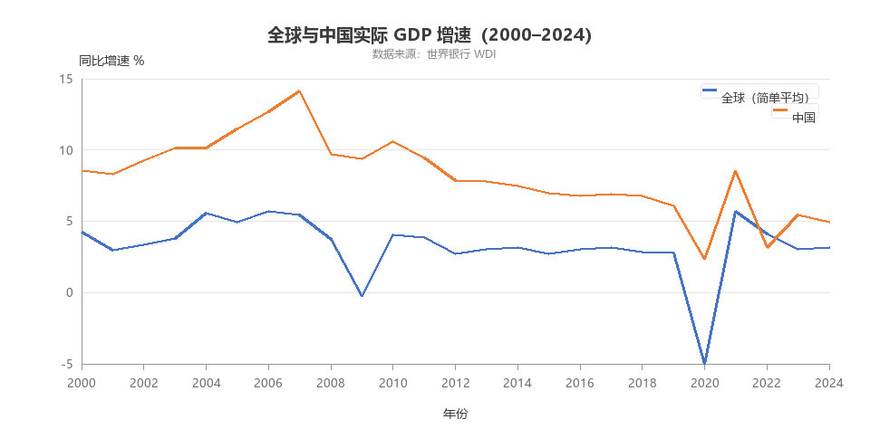
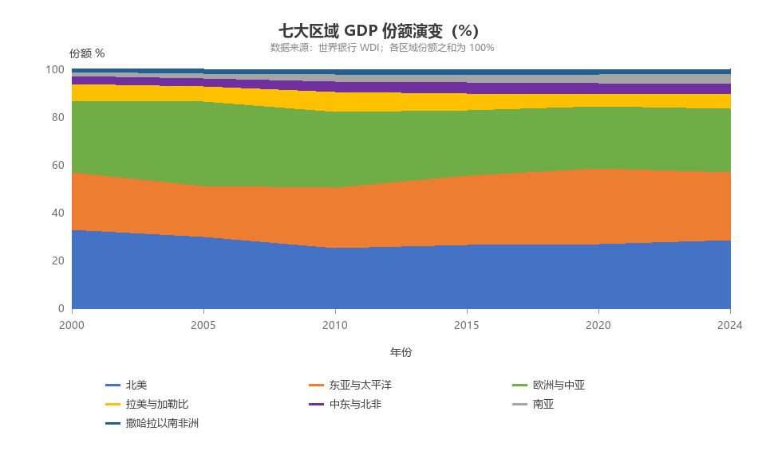
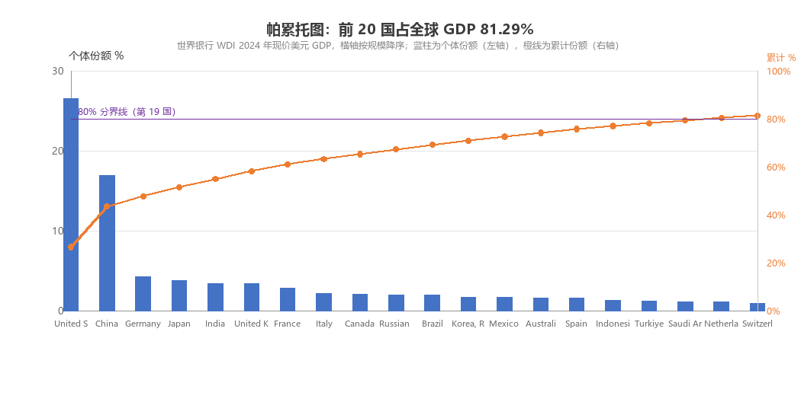
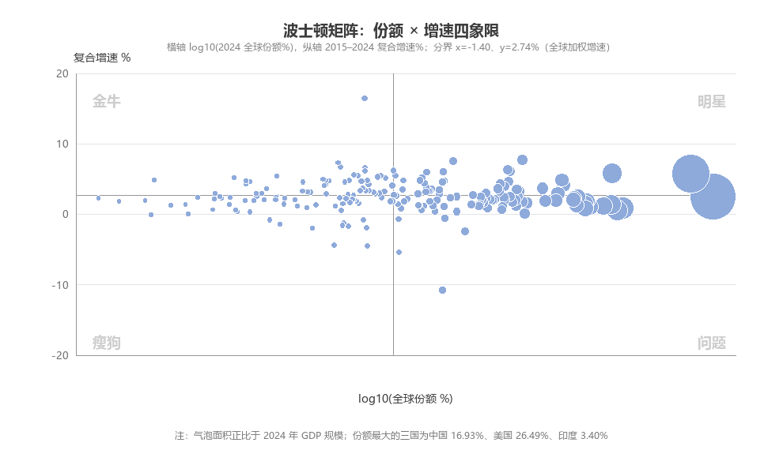
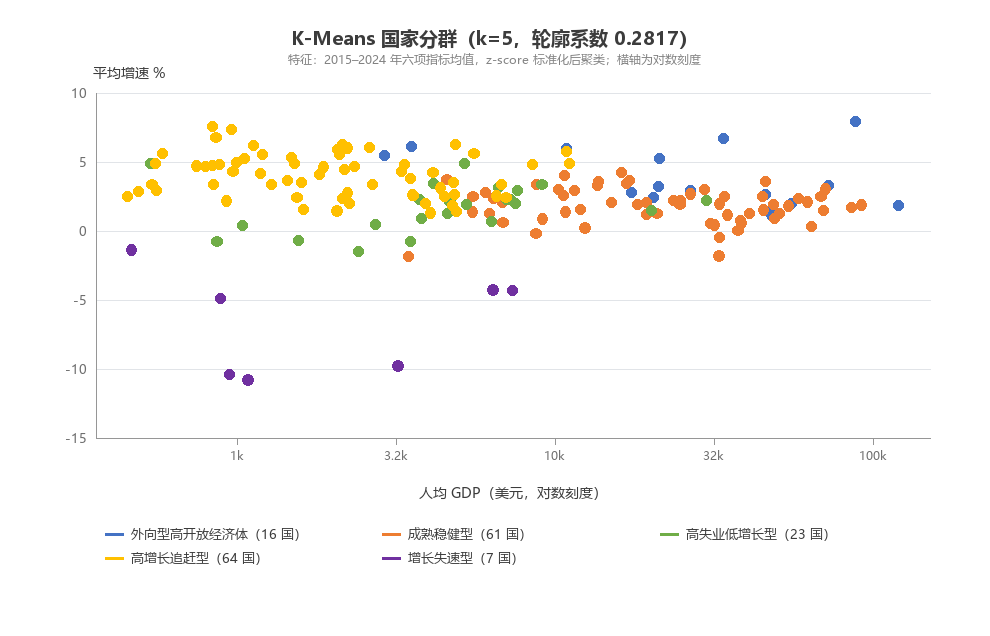
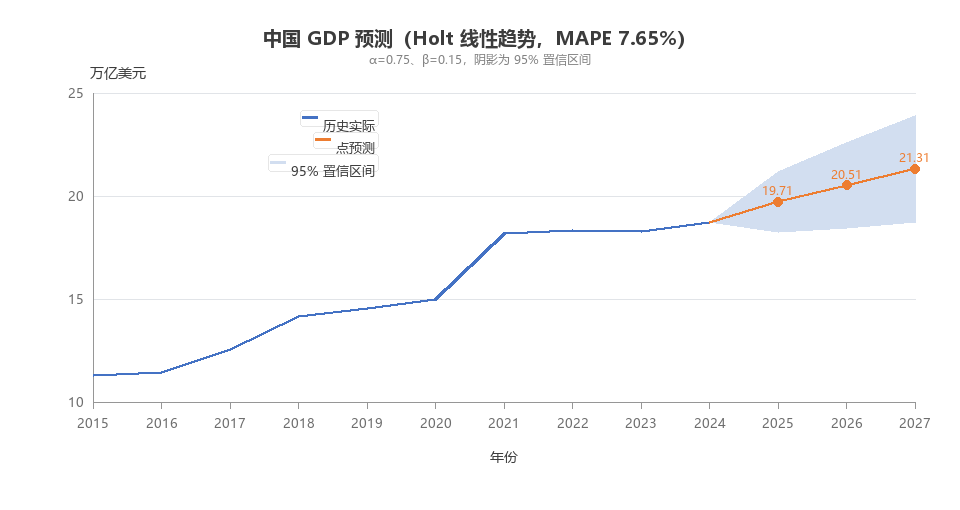
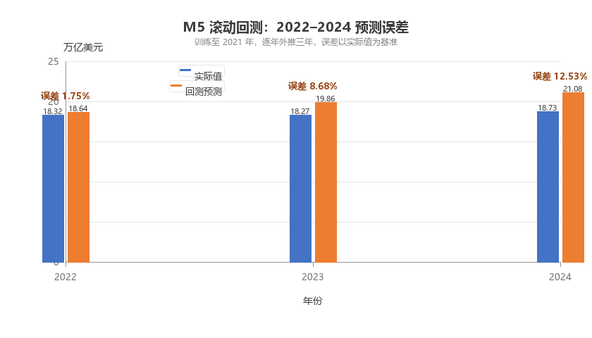
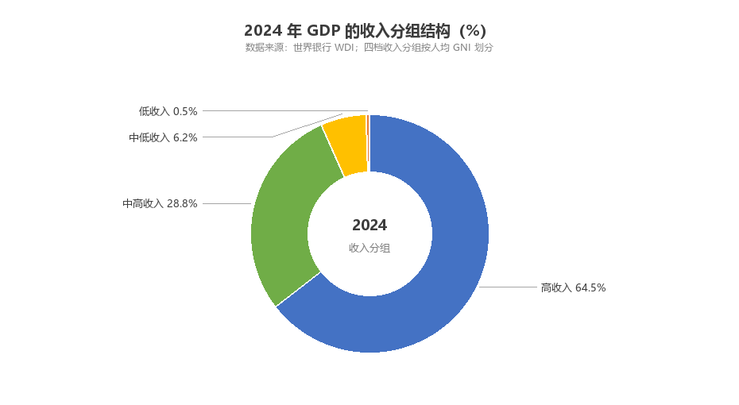

交互大屏
5 个筛选控制器 + 8 个联动组件，支持区域环形图 / 排行榜 / 群体柱 / 明细表的反向联动。 单独打开大屏 →
图 01 · 折线图
全球与中国实际 GDP 增速对比（2000–2024）
figs/fig01_折线图_全球与中国GDP增速.html
图 02 · 柱形图
2024 年 GDP 前十国的规模与全球份额
figs/fig02_柱形图_2024GDP前十.html
图 03 · 堆叠面积图
七大区域 GDP 份额的长期演变
figs/fig03_堆叠面积图_区域份额演变.html
图 04 · 环形饼图
2024 年各区域 GDP 份额构成
figs/fig04_环形饼图_区域份额.html
图 05 · 玫瑰图
四档收入分组的 GDP 份额（高收入占 64.49%）
figs/fig05_玫瑰图_收入分组结构.html
图 06 · 散点图
人均 GDP 与增速的关系（气泡=经济规模）
figs/fig06_散点图_人均GDP与增速.html
图 07 · 雷达图
八个重点国家的六维宏观经济画像
figs/fig07_雷达图_八国多维对比.html
图 08 · 热力图
八国 2000–2024 年增速矩阵
figs/fig08_热力图_八国增速.html
图 09 · 箱线图
各区域增速分布与离群国家
figs/fig09_箱线图_区域增速分布.html
图 10 · 仪表盘
CR10 集中度与中国份额双指针
figs/fig10_仪表盘_集中度.html
图 11 · 矩形树图
区域→国家的 GDP 下钻结构
figs/fig11_矩形树图_区域国家下钻.html
图 12 · 桑基图
收入分组到地理区域的 GDP 流向
figs/fig12_桑基图_收入到区域.html
图 13 · 漏斗图
ABC 三类国家的规模衰减
figs/fig13_漏斗图_ABC分类.html
图 14 · 平行坐标图
K-Means 五个群体的质心画像
figs/fig14_平行坐标图_聚类画像.html
图 15 · 双轴组合图
【模型 M1】中国增速（柱）与全球份额（线）
figs/fig15_M1双轴图_中国增速与份额.html
图 16 · 帕累托图
【模型 M2】前 20 国贡献 81.29%，80% 分界在第 19 国
figs/fig16_M2帕累托图.html
图 17 · 分组柱形图
【模型 M2】ABC 三类的国家数与份额对比
figs/fig17_M2ABC分类对比.html
图 18 · 气泡矩阵图
【模型 M3】波士顿矩阵四象限（份额×复合增速）
figs/fig18_M3波士顿矩阵.html
图 19 · 分类散点图
【模型 M4】K-Means 五群体分布
figs/fig19_M4聚类散点.html
图 20 · 双轴诊断图
【模型 M4】k 的选择：肘部法 SSE + 轮廓系数
figs/fig20_M4选k诊断.html
图 21 · 预测区间图
【模型 M5】中国 2025–2027 年 GDP 点预测与 95% 置信区间
figs/fig21_M5预测置信区间.html
图 22 · 误差柱形图
【模型 M5】2022–2024 年滚动回测误差
figs/fig22_M5回测误差.html
配图 1 · 论文配图
全球与中国实际增速（静态 150dpi）
figs_png/paper_fig1_全球与中国GDP增速.png

配图 2 · 论文配图
七大区域份额演变（堆叠面积）
figs_png/paper_fig2_区域份额演变.png

配图 3 · 论文配图
帕累托图与 80% 分界线
figs_png/paper_fig3_帕累托图.png

配图 4 · 论文配图
波士顿矩阵四象限
figs_png/paper_fig4_波士顿矩阵.png

配图 5 · 论文配图
K-Means 五群体分群
figs_png/paper_fig5_KMeans分群.png

配图 6 · 论文配图
中国 GDP 预测与置信带
figs_png/paper_fig6_中国GDP预测.png

配图 7 · 论文配图
滚动回测误差
figs_png/paper_fig7_回测误差.png

配图 8 · 论文配图
收入分组环形结构
figs_png/paper_fig8_收入分组结构.png
